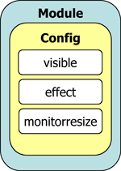

<?php 
$title="Yahoo! UI Library: Module";
$section="container";
$component="Module Control";
$highlightSyntax = true;
$releasenotes = true;
include "../../inc/header.inc";
?>
<div id="yui-main">
<div class="yui-b">
  <div class="yui-ge">
      <div class="yui-u first">
<div id="promo" class="component">
  <h1>Yahoo! UI Library: Module</h1>
  <p>The Module control enables you to create a JavaScript object representation
    of a basic module of content. It can be used to manipulate existing content
    modules on your page or to create modules dynamically and append them to
    the DOM. All other components in the <a href="../index.html">Container family</a> have
    Module as their lowest-level base class. </p>
  <p><strong>Note:</strong> Module is
    fundamentally a building block for other UI controls; this document is of
    most use to those interested in the inner workings of controls built on Module.</p>
  <div>
    <h4>On This Page:</h4>
    <ul>
      <li><a href="#start">Getting Started</a></li>
      <li><a href="#using">Using Module</a></li>
      <li><a href="#support">Support &amp; Community</a></li><li><a href="#filingbugs">Filing Bugs and Feature Requests</a></li>
    </ul>
  </div>

<?php
include('../../inc/quicklinks.inc');
?>

</div>
<h2 class="first">Getting Started<a name="start"></a></h2>
<p>To use Module, include the following code in your page:</p> 
<textarea name="code" class="HTML" cols="60" rows="1"><!-- Dependencies -->
<script type="text/javascript" src="http://yui.yahooapis.com/<?php echo($yuiCurrentVersion);?>/build/yahoo-dom-event/yahoo-dom-event.js"></script>

<!-- Source file -->
<script type="text/javascript" src="http://yui.yahooapis.com/<?php echo($yuiCurrentVersion);?>/build/container/container-min.js"></script>
</textarea>

<p>If you are <em>not</em> using <a href="../tooltip/">Tooltip</a>, <a href="../panel/">Panel</a>, <a href="../dialog/">Dialog</a>, or <a href="../simpledialog/">SimpleDialog</a>, you may substitute <code>container-min.js</code> with the smaller <code>container_core-min.js</code> file:</p>

<textarea name="code" class="HTML" cols="60" rows="1"><!-- If not using Tooltip, Panel, Dialog, or SimpleDialog: -->
<script type="text/javascript" src="http://yui.yahooapis.com/<?php echo($yuiCurrentVersion);?>/build/container/container_core-min.js"></script>
</textarea>
<?php
include "../../inc/include-notice.inc";
?>
<h2>Using Module<a name="using"></a></h2>
<p>This section describes common tasks for creating and using Module.  It contains
these sections:</p>
<ul> 
<li><a href="#html">Defining  Module Markup</a></li>
<li><a href="#init">Initializing the Module</a></li>
<li><a href="#config">Using Configuration Properties</a></li>
<li><a href="#events">Monitoring Events</a></li>
<li><a href="#render">Rendering the Module</a></li>
<li><a href="#show">Showing and Hiding the Module</a></li>
</ul>
<h3> Defining  Module Markup <a name="html"></a></h3>
<p>
In its most basic form, the HTML markup for a Module might look like this:</p>
<textarea name="code" class="HTML" cols="60" rows="1"><div id="myModule">
  <div class="hd"></div> 
  <div class="bd"></div> 
  <div class="ft"></div> 
</div>
</textarea>
<h3> Initializing the Module<a name="init"></a></h3>
<p>
To instantiate a Module around a pre-existing piece of markup, use this code:
</p>
<textarea name="code" class="JScript" cols="60" rows="1">var myModule = new YAHOO.widget.Module("myModule");</textarea>
<p>If the Module doesn't exist on the page, a new one will be created. Then, content (as an HTML string or as a DOM element) can be set into each section using the <code>setHeader</code>, <code>setBody</code>, and <code>setFooter</code> methods:</p>
<textarea name="code" class="JScript" cols="60" rows="1">myModule.setHeader("This is my header content");
myModule.setBody("This is my body content");
myModule.setFooter("This is my footer content");
</textarea>
<p>The <code>setHeader</code>, <code>setBody</code>, and <code>setFooter</code> methods can take either a DOM element or an HTML string as the argument.  Whatever argument you pass in to these methods will entirely replace the current contents of the section you are addressing &mdash; that is, <code>setBody</code> will set the body section's innerHTML to "" (empty string) prior to inserting your argument as the body content.
</p>

<h3 id="config">Using Configuration Properties</h3>

<p>
Configuration properties control the look and behavior of Module instances (and its subclasses). 
These properties are managed by a configuration object (defined by 
<a href="/yui/docs/YAHOO.util.Config.html">YAHOO.util.Config</a>) that is automatically instantiated 
by Module's constructor.  The configuration object is accessible at runtime via its host object 
instance's "cfg" property.  The following diagram illustrates the relationship of the configuration
object and its properties with its host Container family object instance:
</p>



<p>
There are two different ways to set the initial value of configuration properties:  The first is 
via an object literal that is passed as a second argument to the Module's constructor.  
Configuration properties can also be set via the configuration object's 
<a href="/yui/docs/YAHOO.util.Config.html#method_queueProperty"><code>queueProperty</code></a> method.  In 
either case, these properties are not applied to the Container family object instance until it is 
rendered.  For example:
</p>

<textarea name="code" class="JScript" cols="60" rows="1">
YAHOO.util.Event.onDOMReady(function () {

	// Set the initial value of the "visible" property to "false"

	var oModule = new YAHOO.widget.Module("mymodule", { visible: false });

	// Set the initial value of the "visible" property to "true"

	oModule.cfg.queueProperty("visible", true);

	oModule.setBody("This is the body");
	
	// Render the Module instance, triggering the application of the "visible" 
	// configuration property
	
	oModule.render(document.body);

});
</textarea>

<p>
Once rendered, a Container object instance's configuration properties are accessible at runtime 
through the configuration object's 
<a href="/yui/docs/YAHOO.util.Config.html#method_getProperty"><code>getProperty</code></a> 
and <a href="/yui/docs/YAHOO.util.Config.html#method_setProperty"><code>setProperty</code></a> 
methods. It is possible to listen for when the value of a specific configuration property changes by 
using the configuration object's 
<a href="/yui/docs/YAHOO.util.Config.html#method_subscribeToConfigEvent"><code>subscribeToConfigEvent</code></a> 
method.  Additionally, the configuration fires a "configChanged" event that can be used to listen 
for changes made to the value of any configuration property.  For example:
</p>

<textarea name="code" class="JScript" cols="60" rows="1">
YAHOO.util.Event.onDOMReady(function () {

	// Set the initial value of the "visible" property to "false"

	var oModule = new YAHOO.widget.Module("mymodule", { visible: false });


	oModule.setBody("This is the body");
	

	// Render the Module instance, triggering the application of the "visible" 
	// configuration property
	
	oModule.render(document.body);


	// Add an event listener for changes to the "visible" configuration property

	oModule.cfg.subscribeToConfigEvent("visible", function (p_sType, p_aArgs) {
	
		var oValue = p_aArgs[0];
	
		alert("The value of the visible property was changed to: " + oValue);
	
	});


	// Add an event listener for all changes to configuration properties

	oModule.cfg.subscribe("configChanged", function (p_sType, p_aArgs) {
	
		var aProperty = p_aArgs[0],
			sPropertyName = aProperty[0],
			oPropertyValue = aProperty[1];
	
		alert("The value of the " + sPropertyName + " property was changed to: " + oPropertyValue);
	
	});


	// Set the "visible" configuration property to "true"

	oModule.cfg.setProperty("visible", true);

});
</textarea>

<p>
See the <a href="/yui/docs/YAHOO.util.Config.html">Configuration object's API documentation</a> for its full list of properties and methods.
</p>

<p>Module has the following configuration properties, which it passes on to all of its subclasses through inheritance:</p>
<div class="apisummary">
<table>
	<thead>
		<tr>
			<th>Name </th>
			<th>Type</th>
			<th>Default</th>
			<th>Description</th>
		</tr>
	</thead>
	<tbody>

		<tr class="odd">
			<td>visible</td>
			<td>Boolean</td>
			<td>true</td>
			<td>Sets whether or not the Module is visible on the page (Module uses the CSS "display" property to control this).</td>
		</tr>

		<tr>
			<td>monitorresize</td>
			<td>Boolean</td>
			<td>true</td>
			<td>Configures whether or not to create a hidden off-screen element that can be used to monitor for text size changes in the DOM. </td>
		</tr>

		<tr class="odd">
			<td>effect</td>
			<td>Object</td>
			<td>null</td>
			<td>
                Object or array of objects representing the ContainerEffect classes that are active for animating the container.
                <strong>NOTE:</strong> The effect configuration property is introduced at the Module class, however Container does
                not ship with a ContainerEffect implementation for the Module class so setting the effect property on a Module instance
                has no impact. Overlay is the lowest Container class for which ContainerEffects are implemented out of the box.
            </td>
		</tr>

		<tr>
			<td>appendtodocumentbody</td>
			<td>Boolean</td>
			<td>false</td>
			<td>
				<p>Specifies if the module should be rendered as the first child of document.body or appended as the last child when render is called with document.body as the "appendToNode".</p>
				<p>Appending to the body while the DOM is still being constructed can lead to Operation Aborted errors in IE hence this flag is set to false by default.</p>			
			</td>
		</tr>

	</tbody>
</table>

</div>
<h3>Monitoring Events<a name="events"></a></h3>
<p>Module and its subclasses each introduce hooks for <a href="../../event/">Custom Events</a> to which a listener can subscribe. By listening for the execution of these events, you have the ability to react to the various interesting moments that occur during the lifecycle of a Module. See the <a href="/yui/docs/container/YAHOO.widget.Module.html">full API documentation</a> for more information on the events that are available to listening subscribers.</p>
<h3>Rendering the Module<a name="render"></a></h3>
<p>
Once a Module is successfully instantiated, a call to its <code>render</code> function is required so that all visual properties are properly applied to the Module. If the Module is already in the DOM, you can simply call: </p>
<textarea name="code" class="JScript" cols="60" rows="1">
// Render the Module that is already in the DOM
myModule.render();</textarea>
<p>If you have created a module scriptologically with no pre-existing markup, you must pass an element to the render function so that the Module can be inserted into the DOM:</p>
<textarea name="code" class="JScript" cols="60" rows="1">
// Render the Module into the body of the document.
myModule.render(document.body);</textarea>
<h3>Showing and Hiding the Module<a name="show"></a></h3>
<p>
Showing and hiding a rendered Module instance (as well as rendered instances of all Module subclasses) is very easy. You can change the visibility of the Module two ways:</p>
<textarea name="code" class="JScript" cols="60" rows="1">// 1. Using show() and hide()
myModule.show();
myModule.hide();
// 2. Using the configuration properties
myModule.cfg.setProperty("visible", true);
myModule.cfg.setProperty("visible", false);
</textarea>
<?php 
include "../../inc/support.inc";
?>
		</div>
         <div class="yui-u">
			
			<div id="examples">
<?php 
	include("../../inc/examplesNav/".$section.".inc");
?>
		   </div>

			<div id="morereading">
				<h3>More Reading about the YUI Module Control:</h3>
				
				<ul>
				  <li><a href="http://vani.vox.com/library/post/yui-simple-showhide-div-using-module.html">YUI: Simple show/hide div using Module</a>, by Vani</li>
			   </ul>
		   </div>
<?php 
$thisURI="http://developer.yahoo.com/yui/container/module/";
require_once('../../inc/badge.inc');
?>
<h3 id="delicious">YUI Module on del.icio.us:</h3>
<div class="delicious">
<?php require('../../inc/badge-html.inc'); ?>
</div>

		 </div>
      </div>
</div>
</div>
<?php include "../../inc/side.inc" ?>
<?php include "../../inc/footer.inc" ?>